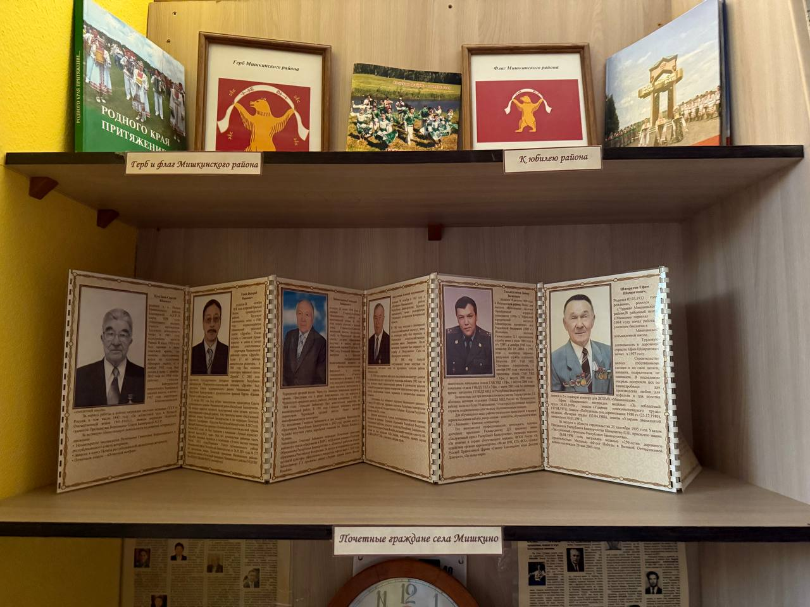
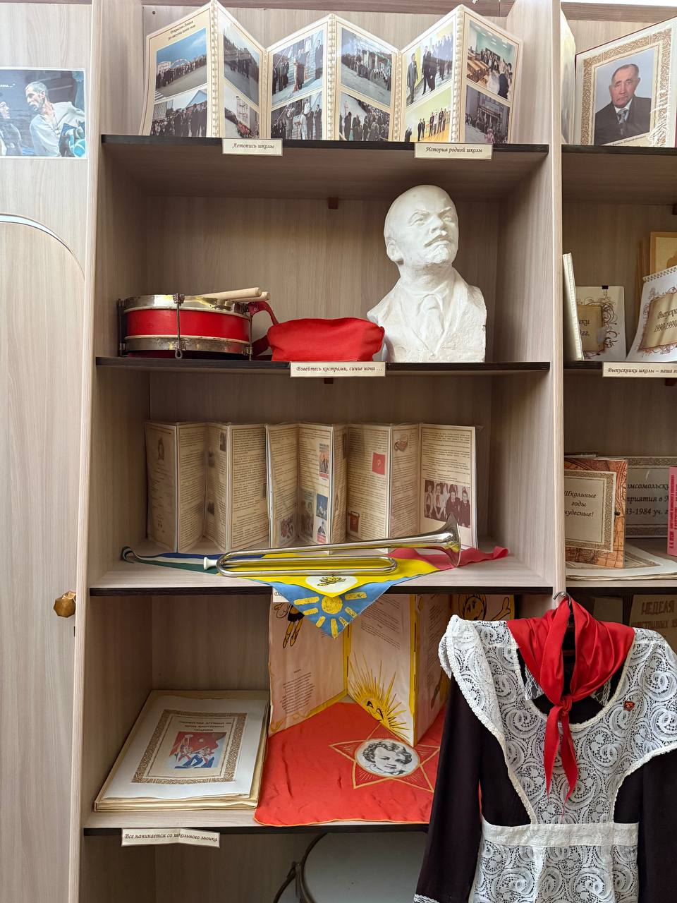

Описание
На этой страничке можно познакомится с нашими экспонатами и с нашей историей
-
Первый раздел
Посвящен башкирскому драматургу Флориду Булякову. Экспонаты представлены в музей братом Фларида Рауфом Буляковым. Это печатная машинка, баян и другие личные вещи. Ф. Буляков был не только писателем, но и писал музыку. После службы в армии работал в районом доме культуры музыкальным руководителем народного ансамбля танца «Эрвел». Мы мишкинцы гордимся им, он написал музыку к гимну нашего района «Мишкан- моя песнь». Также представлена родословная писателя. В его роду много известных личностей это поэт Ш. Бабич, Али Карнай и многие другие. Буляков имеет множество наград, таких как Лауреат Государственной премии РБ, заслуженный деятель искусств РБ, в 1995 г удостоен Государственной премии РФ за спектакль «Бибинур, ах Бибинур» и в 2011 г стал Почетным гражданином Мишкинского района.
-
Второй Раздел
Посвящен истории нашей школы. Школа берет свое начало с 1877 г, как черемисская начальная школа. Первым директором был Андрей Аристархов, как Мишкинская средняя школа открыта в 1934 г, директором назначен Аймурзин Ямидан. С 2006 г учимся в новом здании, и наш лицей носит имя Ф. Булякова.

-

-
Третий Раздел
3- раздел посвящен краеведению и героям Великой Отечественной войны. С нашего района на защиту Родины встали 10866 жителей, 4843 земляка погибли на фронтах сражения, 6023 человека вернулись с Победой. Героями Советского Союза стали 5 земляков – это Ишмай Ишкинин, Махмут Актуганов, Гзи Загитов, Егор Орсаев, Степан Казаков. Одним из тех кто первым водрузил Знамя Победы над Рейхстагом был уроженец Мишкинского района Гзи Казыханович Загитов. Ворвавшись в рейхстаг, получил сквозное ранение в грудь, но продолжил бой.
-

-
Четвёртый Раздел
посвящен страницам из школьной жизни. Здесь имеются атрибуты пионеров, комсомольцев.